Jubilee (Jubilation Lee) (Terre-616)
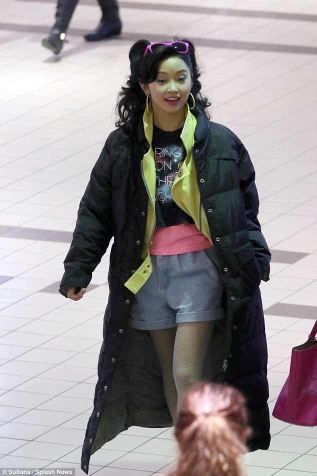
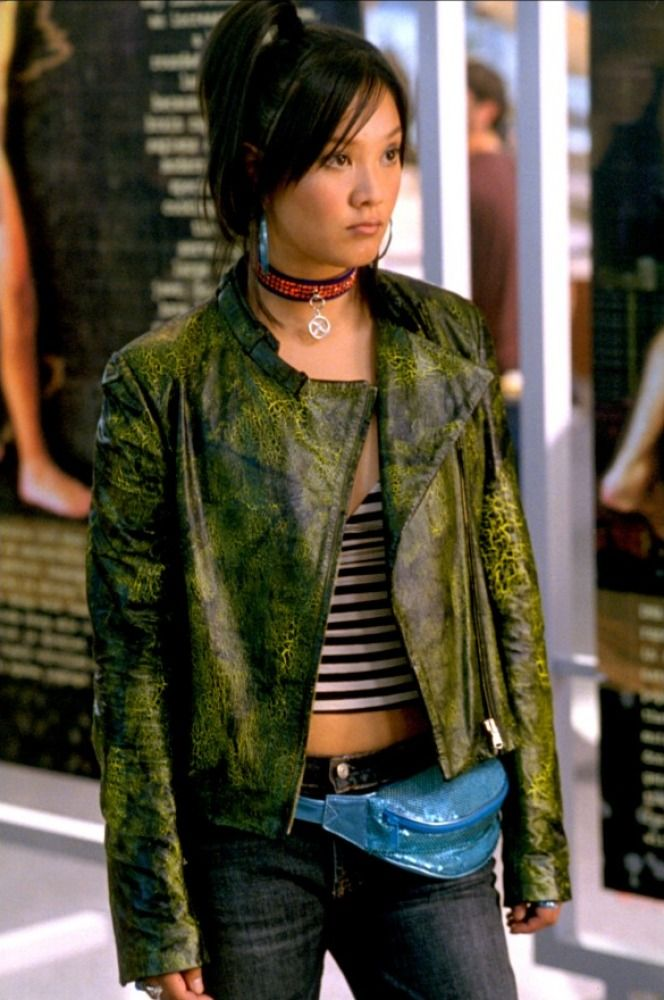
Origines :
Fille de deux parents immigrants hongkongais aisés, Jubilation « Jubilee » Lee est née et a grandi à Beverly Hills, en Californie, où elle a mené une vie privilégiée.
Jubilee a fréquenté une école huppée de Beverly Hills, où elle a découvert son talent pour la gymnastique.
Elle découvrit son pouvoir mutant pour la première fois en fuyant la sécurité d'un centre commercial.
Elle était capable de générer des décharges d'énergie explosives et aveuglantes, souvent comparées à des feux d'artifice.
Le stress de la fuite la poussa à émettre une puissante explosion d'énergie dans une ruelle, qui désorienta complètement les hommes à sa poursuite et lui permit de s'échapper.
Sa vie changea complètement en une nuit, lorsque ses parents furent tués dans un mystérieux accident de voiture, laissant Jubilee orpheline.
Elle fut alors envoyée dans un orphelinat, duquel elle s'enfuit pour se réfugier dans un centre commercial d'Hollywood.
Exaspérés par le caractère rebelle de la jeune fille et ses puissants spectacles de lumière, les agents de sécurité engagèrent des chasseurs de mutants, connus sous le nom d' Escadron M, pour la capturer.
Jubilee se défendit en repoussant les assaillants, mais sera vite rattrapée.
Par chance, elle fut secourue par les X-Men Dazzler, Psylocke, Malicia et Tornade, qui se trouvaient justement dans le centre commercial.
Intriguée par ces étranges femmes, Jubilee les suivit à travers un portail jusqu'à leur base temporaire, en Australie.
Elle resta cachée un moment, volant de la nourriture et empruntant des vêtements à plusieurs X-Men pour se confectionner un costume de fortune.
Elle restera cachée jusqu'à ce que les X-Men abandonnent leur base et que leurs ennemis, les Reavers, capturent Wolverine et prennent le contrôle des lieux.
Alors qu'elle explorait furtivement les cavernes de la base, Jubilee découvrit avec effroi Wolverine crucifié, aux portes de la mort.
Elle l'aida à descendre de la croix et resta à ses côtés jusqu'à sa guérison.
Ensemble, ils se rendirent à Hong-Kong, où ils apprirent que le Mandarin avait renforcé son emprise sur le milieu criminel local en s'alliant à la Main.
Au cours de leur enquête, ils furent pris en embuscade et capturés par la principale tueuse du Mandarin, Lady Mandarin, qui s'avérait en réalité être la mutante Psylocke ayant subi un lavage de cerveau.
Après qu'elle eut établi un lien mental avec Wolverine en l'attaquant avec son couteau psychique, les contrecoup des souvenirs des X-Men la libéra, entraînant la défaite du Mandarin.
Pendant ce temps, Jubilee tint tête à la Main et détruisit une partie du château du Mandarin avec ses pouvoirs.
Suite à ses aventures, elle et Wolverine développèrent une relation père-fille très forte.
Le duo fera équipe pour affronter Dents-de-Sabre, Omega Red, Sauron ou les Sentinelles, et intégrera rapidement l'équipe des X-Men après ça.
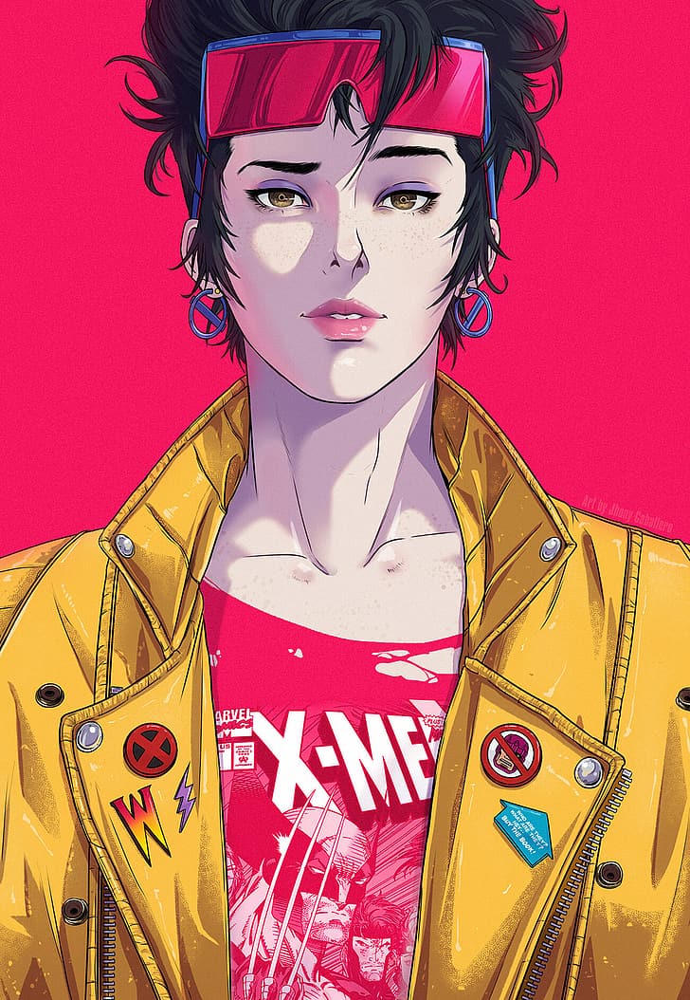
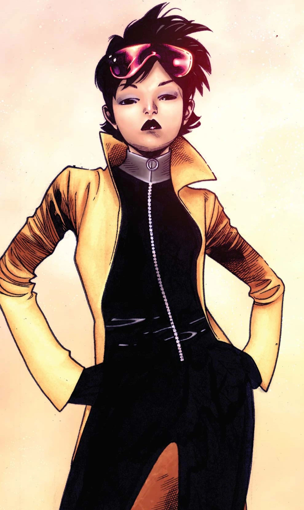
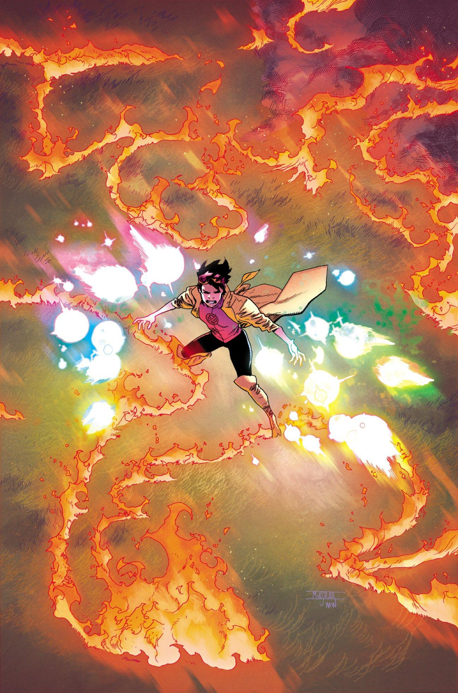
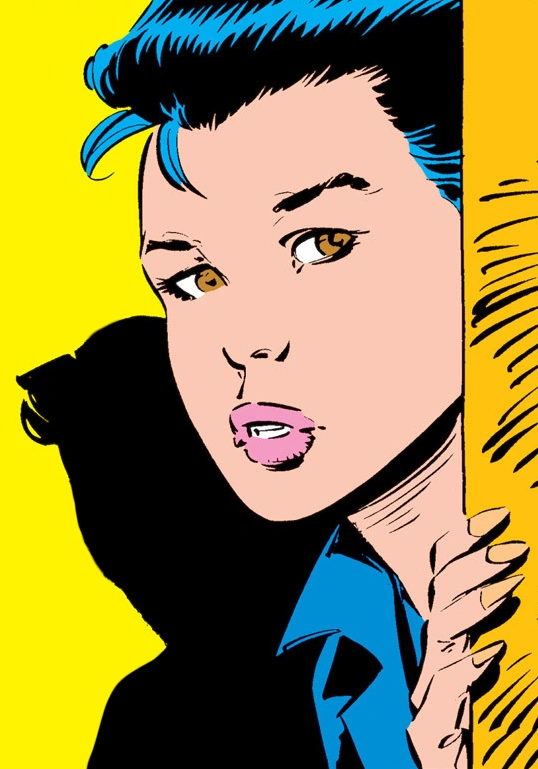
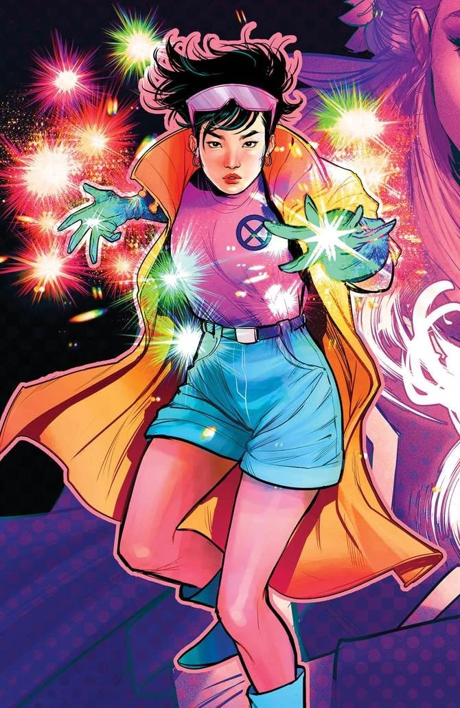
.jpg)
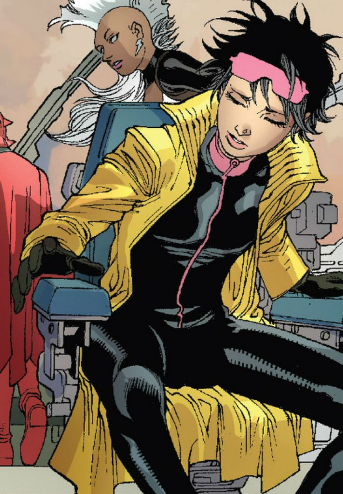

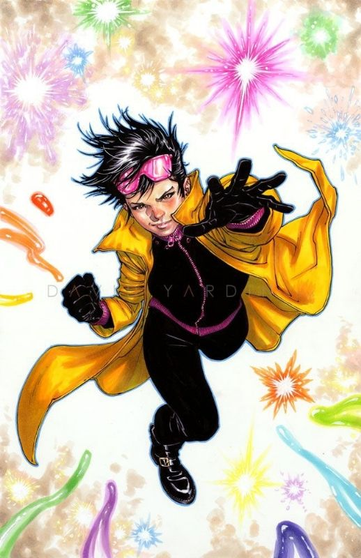
Personnalité :
Jubilee est souvent décrite comme l'un des personnages les plus optimistes, dynamiques et attachants des X-Men.
Elle utilise souvent l'humour et le sarcasme, sa manière de gérer le stress et de remonter le moral de l'équipe.
Sous son attitude décontractée, elle est extrêmement loyale et compatissante, et n'hésite pas à se mettre en danger pour protéger ceux qu'elle aime.
Même si elle peut paraître insouciante, elle fait preuve d'un courage réel et d'une volonté de se dépasser.
Capacités :
En tant que mutante, Jubilee a la capacité de générer des plasmoïdes d'énergie pyrotechnique à partir de ses mains, semblables à des feux d'artifice.
Les plasmoïdes obéissent à son contrôle mental, suivant la direction qu'elle souhaite, et prenant diverses formes et explosant quand elle le souhaite.
Elle est également capable d'absorber l'énergie dans son propre corps sans dommage.

Costume :
Jubilee est immédiatement reconnaissable à son long imperméable jaune vif, souvent ouvert.
Elle porte un t-shirt ou un débardeur rose flashy et un short bleu.
Elle porte également des gants, parfois longs parfois courts, souvent bleus, et des chaussures ou bottines simples, souvent blanches.
En plus de sa tenue, elle porte des grosses lunettes roses translucides, sur les yeux ou relevées sur sa tête, très années 90.
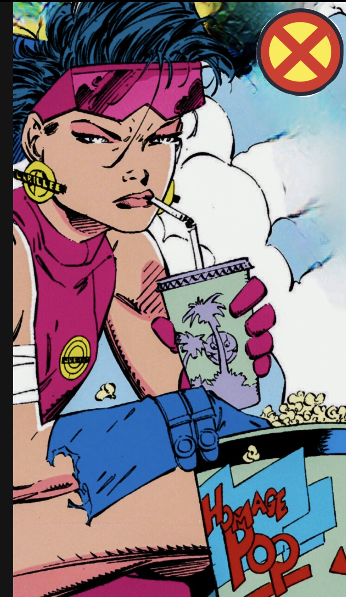
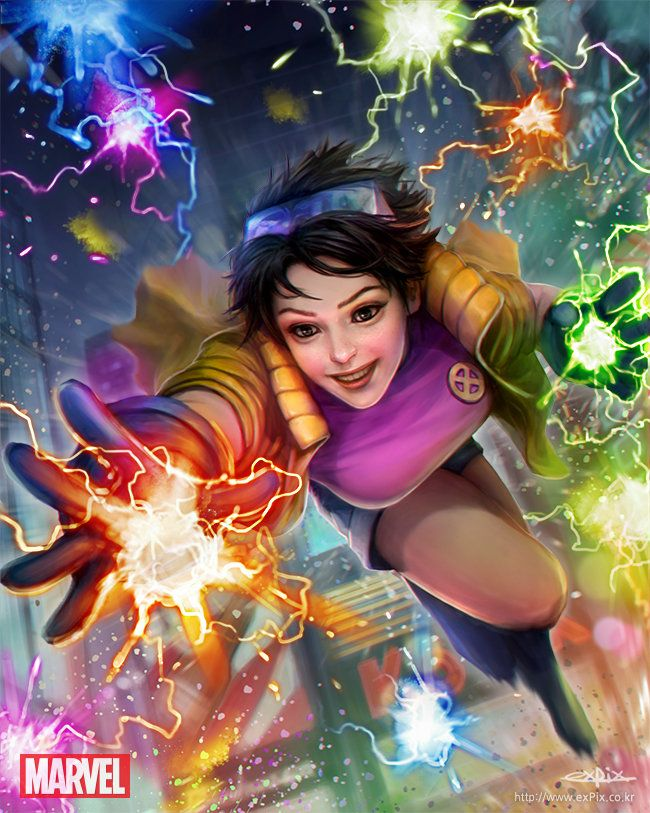
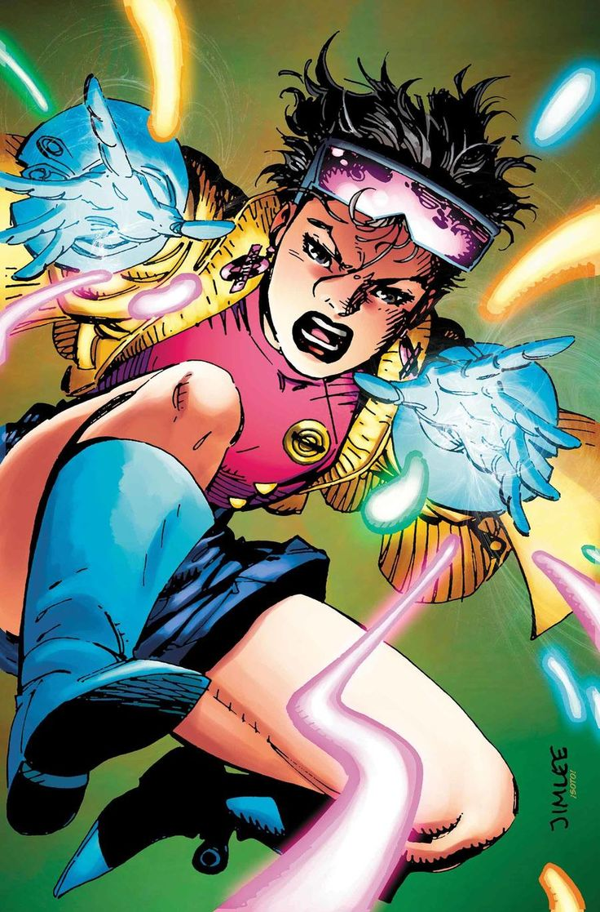
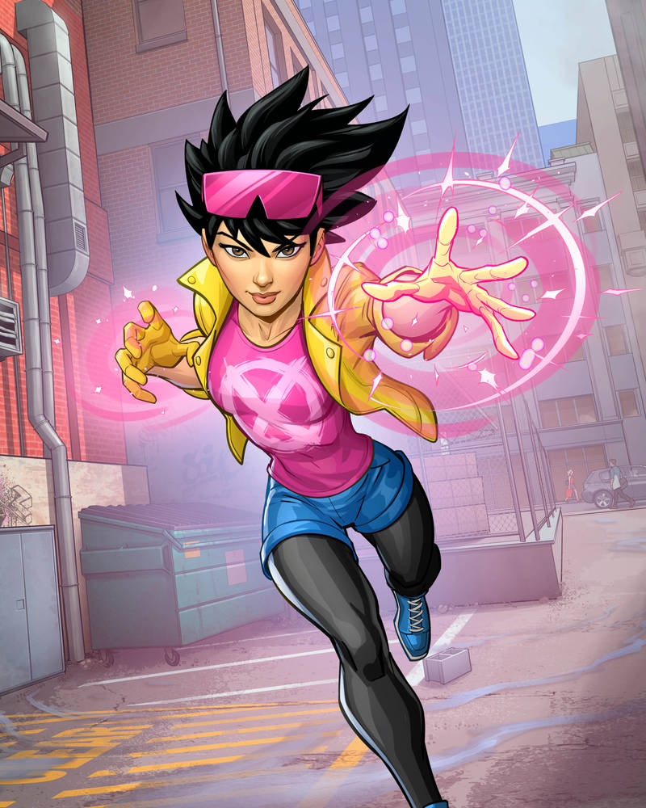
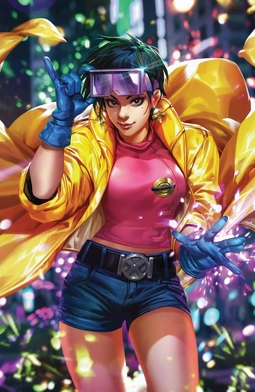
Les principaux ennemis de Jubilee
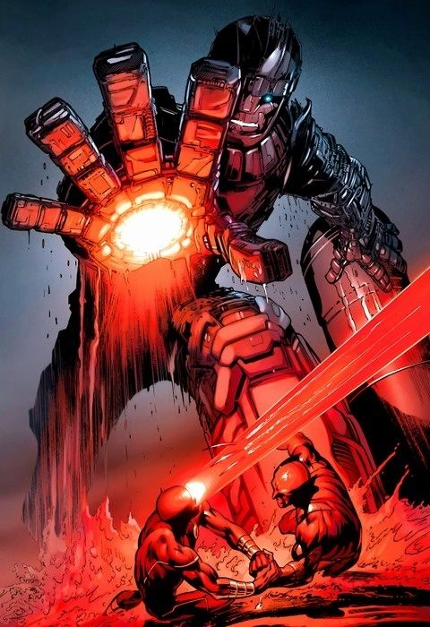
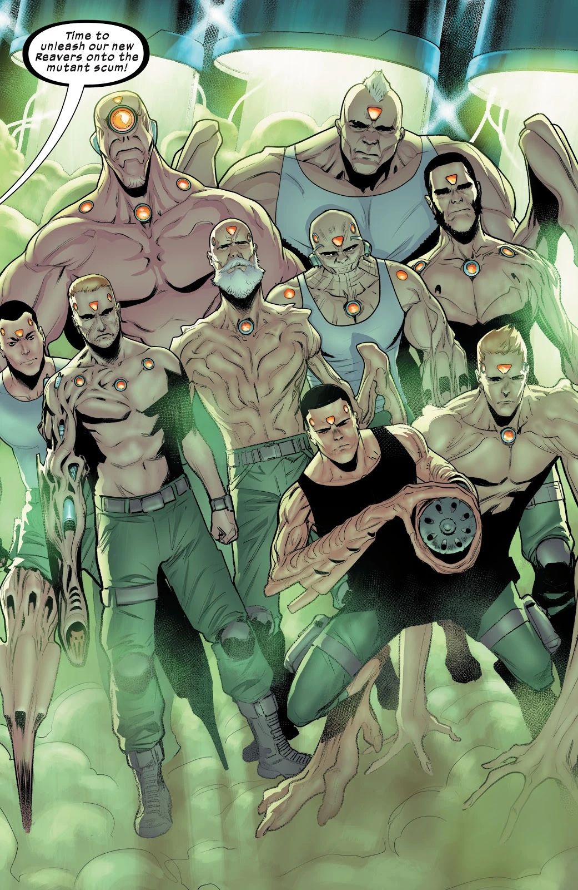


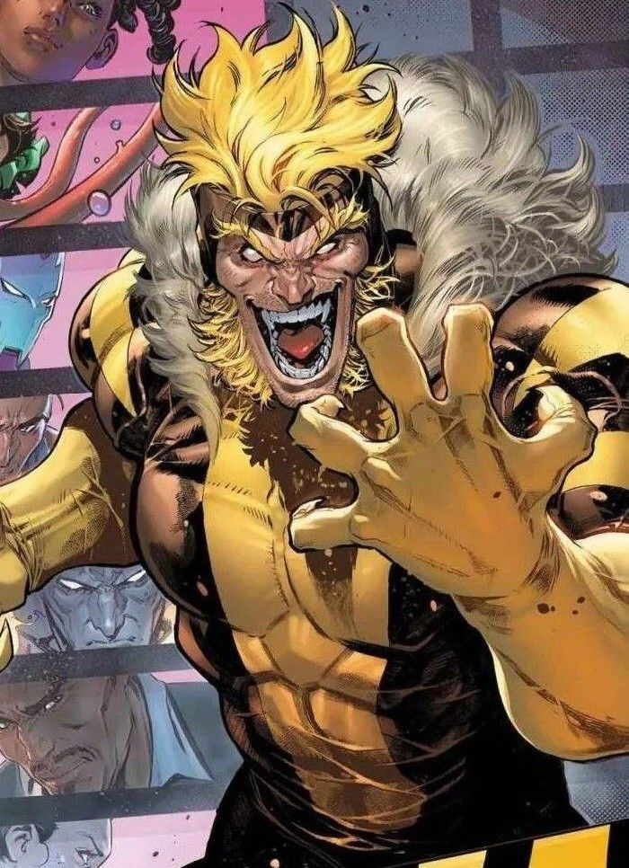
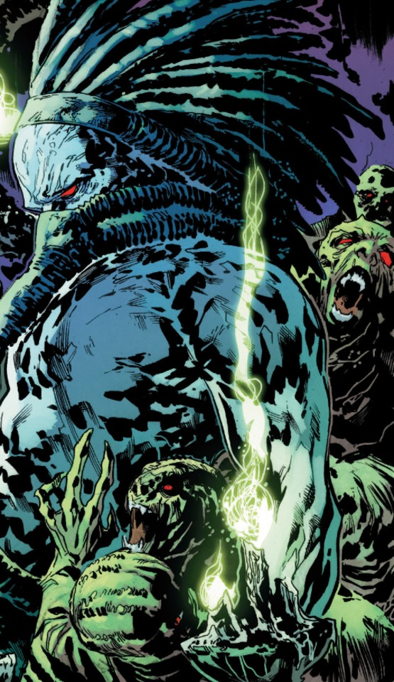
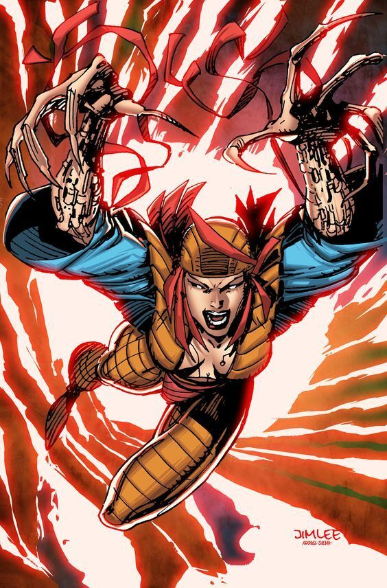

Équipes affiliées